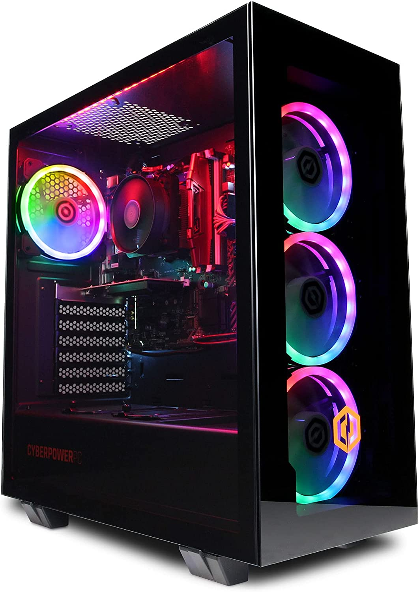

Now we are in business pre-build PC's can definitely last 8 years the specifications for PC's should usually be quite powerful even if they are outdated.
Lets take a bang average pre build PC and look at it's specifications
As you can see there is alot of parts and every single one of them work together to do certain things, whether it be, cool the PC down or store programs on certain things. These parts are amazing and for £700 you are getting a good deal because if you buy all the parts yourself it can cost can more. This pc will never overheat and even if it does all you need to do is take the tempered glass off and spray the dust away with some compressed air or a cloth.
Pre-build PC's do cost much more but they're easily worth it. Children from around the world have been saving their money and buying computer parts to build their own Computer. This is because when you buy a console or laptop you go from being able to play games/do work to literally everything you can think of.
It is completely impossible to get a random PC because basically every Self Built PC is different and unique based on what the owner uses the only thing I can say is that only some parts (usually ones made by the same company) are compatible with each other.